72,476
26 telemetry channels
1,035
46 lap timing columns
20
Full grid covered
96
19 drivers x 5 laps + PER x 1 lap
6,976
DriverAhead & Gap to car ahead
0
Zero duplicate rows
Comprehensive assessment of the raw telemetry and race-lap datasets ingested during Phase 2.
| Dataset | File Name | Format | File Size (Bytes) | File Size (MB) | Total Rows | Total Columns | Memory Usage (MB) | Unique Drivers | Unique Laps | Unique Driver-Laps | Total Missing Values | Missing Percentage (%) | Constant Columns Count | Constant Columns | Duplicate Rows |
|---|---|---|---|---|---|---|---|---|---|---|---|---|---|---|---|
| Telemetry | 2024_abu_dhabi_race_telemetry.parquet | parquet | 7288354 | 6.95 | 72476 | 26 | 33.07 | 20 | 5 | 96 | 6976 | 0.370 | 5 | Source; Status; Year; Event; Session | 0 |
| Race Laps | 2024_abu_dhabi_race_laps.parquet | parquet | 132481 | 0.13 | 1035 | 46 | 0.60 | 20 | 58 | 1035 | 3119 | 6.551 | 1 | Rainfall | 0 |
Data types, null percentages, and unique value counts across all columns in both datasets.
| Dataset | Column Name | Data Type | Non-Null Count | Null Count | Null Percentage (%) | Unique Count | Sample Values |
|---|---|---|---|---|---|---|---|
| Telemetry | Date | datetime64[ns] | 72476 | 0 | 0.000 | 4351 | 2024-12-08 13:03:35.034000, 2024-12-08 13:03:35.110000, 2024-12-08 13:03:35.116000 |
| Telemetry | SessionTime | timedelta64[ns] | 72476 | 0 | 0.000 | 4351 | 0 days 00:56:47.817000, 0 days 00:56:47.893000, 0 days 00:56:47.899000 |
| Telemetry | DriverAhead | object | 68457 | 4019 | 5.545 | 21 | 61, 4, 55 |
| Telemetry | DistanceToDriverAhead | float64 | 69519 | 2957 | 4.080 | 67395 | 0.0, 0.010277774222222187, 0.011111111111111072 |
| Telemetry | Time | timedelta64[ns] | 72476 | 0 | 0.000 | 45308 | 0 days 00:00:00, 0 days 00:00:00.076000, 0 days 00:00:00.082000 |
| Telemetry | RPM | float64 | 72476 | 0 | 0.000 | 41595 | 10000.0, 9999.970149881043, 9999.174129727086 |
| Telemetry | Speed | float64 | 72476 | 0 | 0.000 | 30080 | 0.0, 1.5535707428571428, 3.0 |
| Telemetry | nGear | Int64 | 72476 | 0 | 0.000 | 8 | 1, 2, 3 |
| Telemetry | Throttle | float64 | 72476 | 0 | 0.000 | 12756 | 21.0, 18.41071542857143, 16.0 |
| Telemetry | Brake | bool | 72476 | 0 | 0.000 | 2 | False, True |
| Telemetry | DRS | Int64 | 72476 | 0 | 0.000 | 2 | 0, 1 |
| Telemetry | Source | object | 72476 | 0 | 0.000 | 1 | merged |
| Telemetry | Distance | float64 | 72476 | 0 | 0.000 | 72374 | 0.0014869038478941376, 0.0, -0.00023325237282172812 |
| Telemetry | RelativeDistance | float64 | 72476 | 0 | 0.000 | 72393 | 2.8187449351746785e-07, 0.0, -4.421798661963865e-08 |
| Telemetry | Status | object | 72476 | 0 | 0.000 | 1 | OnTrack |
| Telemetry | X | float64 | 72476 | 0 | 0.000 | 43335 | 207.96631404418176, 207.99690562742722, 208.0 |
| Telemetry | Y | float64 | 72476 | 0 | 0.000 | 49371 | 2045.9969343972518, 2045.9997183997284, 2046.0 |
| Telemetry | Z | float64 | 72476 | 0 | 0.000 | 35649 | -236.99999409282134, -236.99999945746708, -237.0 |
| Telemetry | AccelerationX | float64 | 72476 | 0 | 0.000 | 70666 | 0.0, 0.7991619047619047, 1.7912253968253966 |
| Telemetry | AccelerationY | float64 | 72476 | 0 | 0.000 | 72385 | 0.0, 0.007366855201251016, 0.006034909222132309 |
| Telemetry | AccelerationZ | float64 | 72476 | 0 | 0.000 | 71930 | 0.0, 3.06653418602292e-05, 0.0003247401108022902 |
| Telemetry | Driver | object | 72476 | 0 | 0.000 | 20 | ALB, ALO, BOT |
| Telemetry | LapNumber | int64 | 72476 | 0 | 0.000 | 5 | 1, 2, 3 |
| Telemetry | Year | int64 | 72476 | 0 | 0.000 | 1 | 2024 |
| Telemetry | Event | object | 72476 | 0 | 0.000 | 1 | Abu Dhabi |
| Telemetry | Session | object | 72476 | 0 | 0.000 | 1 | Race |
| Race Laps | index | int64 | 1035 | 0 | 0.000 | 1035 | 0, 1, 2 |
| Race Laps | Time | timedelta64[ns] | 1035 | 0 | 0.000 | 1034 | 0 days 00:58:27.597000, 0 days 01:00:22.535000, 0 days 01:02:00.586000 |
| Race Laps | Driver | category | 1035 | 0 | 0.000 | 20 | VER, GAS, PER |
| Race Laps | DriverNumber | object | 1035 | 0 | 0.000 | 20 | 1, 10, 11 |
DistanceToDriverAhead belong strictly to Lando Norris (NOR) during laps 2 through 5.
Norris held P1 (race leader) throughout these laps; by definition, the leader of a Grand Prix has no vehicle ahead.
Furthermore, DriverAhead nulls for non-NOR drivers occur almost exclusively within the first 25 meters of the start-finish line timing loop.
| Dataset | Column Name | Data Type | Total Rows | Missing Count | Missing Percentage (%) | Non-Missing Count |
|---|---|---|---|---|---|---|
| Telemetry | Date | datetime64[ns] | 72476 | 0 | 0.000 | 72476 |
| Telemetry | SessionTime | timedelta64[ns] | 72476 | 0 | 0.000 | 72476 |
| Telemetry | DriverAhead | object | 72476 | 4019 | 5.545 | 68457 |
| Telemetry | DistanceToDriverAhead | float64 | 72476 | 2957 | 4.080 | 69519 |
| Telemetry | Time | timedelta64[ns] | 72476 | 0 | 0.000 | 72476 |
| Telemetry | RPM | float64 | 72476 | 0 | 0.000 | 72476 |
| Telemetry | Speed | float64 | 72476 | 0 | 0.000 | 72476 |
| Telemetry | nGear | Int64 | 72476 | 0 | 0.000 | 72476 |
| Telemetry | Throttle | float64 | 72476 | 0 | 0.000 | 72476 |
| Telemetry | Brake | bool | 72476 | 0 | 0.000 | 72476 |
| Telemetry | DRS | Int64 | 72476 | 0 | 0.000 | 72476 |
| Telemetry | Source | object | 72476 | 0 | 0.000 | 72476 |
| Telemetry | Distance | float64 | 72476 | 0 | 0.000 | 72476 |
| Telemetry | RelativeDistance | float64 | 72476 | 0 | 0.000 | 72476 |
| Telemetry | Status | object | 72476 | 0 | 0.000 | 72476 |
| Telemetry | X | float64 | 72476 | 0 | 0.000 | 72476 |
| Telemetry | Y | float64 | 72476 | 0 | 0.000 | 72476 |
| Telemetry | Z | float64 | 72476 | 0 | 0.000 | 72476 |
| Telemetry | AccelerationX | float64 | 72476 | 0 | 0.000 | 72476 |
| Telemetry | AccelerationY | float64 | 72476 | 0 | 0.000 | 72476 |
| Telemetry | AccelerationZ | float64 | 72476 | 0 | 0.000 | 72476 |
| Telemetry | Driver | object | 72476 | 0 | 0.000 | 72476 |
| Telemetry | LapNumber | int64 | 72476 | 0 | 0.000 | 72476 |
| Telemetry | Year | int64 | 72476 | 0 | 0.000 | 72476 |
| Telemetry | Event | object | 72476 | 0 | 0.000 | 72476 |
| Telemetry | Session | object | 72476 | 0 | 0.000 | 72476 |
| Race Laps | index | int64 | 1035 | 0 | 0.000 | 1035 |
| Race Laps | Time | timedelta64[ns] | 1035 | 0 | 0.000 | 1035 |
| Race Laps | Driver | category | 1035 | 0 | 0.000 | 1035 |
| Race Laps | DriverNumber | object | 1035 | 0 | 0.000 | 1035 |
| Race Laps | LapTime | timedelta64[ns] | 1035 | 2 | 0.193 | 1033 |
| Race Laps | LapNumber | float64 | 1035 | 0 | 0.000 | 1035 |
| Race Laps | Stint | float64 | 1035 | 0 | 0.000 | 1035 |
| Race Laps | PitOutTime | timedelta64[ns] | 1035 | 1007 | 97.295 | 28 |
| Race Laps | PitInTime | timedelta64[ns] | 1035 | 1005 | 97.101 | 30 |
| Race Laps | Sector1Time | timedelta64[ns] | 1035 | 21 | 2.029 | 1014 |
| Race Laps | Sector2Time | timedelta64[ns] | 1035 | 2 | 0.193 | 1033 |
| Race Laps | Sector3Time | timedelta64[ns] | 1035 | 2 | 0.193 | 1033 |
| Race Laps | Sector1SessionTime | timedelta64[ns] | 1035 | 25 | 2.415 | 1010 |
| Race Laps | Sector2SessionTime | timedelta64[ns] | 1035 | 2 | 0.193 | 1033 |
| Race Laps | Sector3SessionTime | timedelta64[ns] | 1035 | 2 | 0.193 | 1033 |
| Race Laps | SpeedI1 | float64 | 1035 | 2 | 0.193 | 1033 |
| Race Laps | SpeedI2 | float64 | 1035 | 2 | 0.193 | 1033 |
| Race Laps | SpeedFL | float64 | 1035 | 32 | 3.092 | 1003 |
| Race Laps | SpeedST | float64 | 1035 | 2 | 0.193 | 1033 |
| Race Laps | IsPersonalBest | bool | 1035 | 0 | 0.000 | 1035 |
| Race Laps | Compound | category | 1035 | 0 | 0.000 | 1035 |
| Race Laps | TyreLife | float64 | 1035 | 0 | 0.000 | 1035 |
| Race Laps | FreshTyre | bool | 1035 | 0 | 0.000 | 1035 |
| Race Laps | Team | category | 1035 | 0 | 0.000 | 1035 |
| Race Laps | LapStartTime | timedelta64[ns] | 1035 | 0 | 0.000 | 1035 |
| Race Laps | LapStartDate | datetime64[ns] | 1035 | 0 | 0.000 | 1035 |
| Race Laps | TrackStatus | category | 1035 | 0 | 0.000 | 1035 |
| Race Laps | Position | float64 | 1035 | 2 | 0.193 | 1033 |
| Race Laps | Deleted | boolean | 1035 | 0 | 0.000 | 1035 |
| Race Laps | DeletedReason | object | 1035 | 1008 | 97.391 | 27 |
| Race Laps | FastF1Generated | bool | 1035 | 0 | 0.000 | 1035 |
| Race Laps | IsAccurate | bool | 1035 | 0 | 0.000 | 1035 |
| Race Laps | WeatherTime | timedelta64[ns] | 1035 | 0 | 0.000 | 1035 |
| Race Laps | AirTemp | float64 | 1035 | 0 | 0.000 | 1035 |
| Race Laps | Humidity | float64 | 1035 | 0 | 0.000 | 1035 |
| Race Laps | Pressure | float64 | 1035 | 0 | 0.000 | 1035 |
| Race Laps | Rainfall | bool | 1035 | 0 | 0.000 | 1035 |
| Race Laps | TrackTemp | float64 | 1035 | 0 | 0.000 | 1035 |
| Race Laps | WindDirection | Int64 | 1035 | 0 | 0.000 | 1035 |
| Race Laps | WindSpeed | float64 | 1035 | 0 | 0.000 | 1035 |
| Race Laps | LapTimeSeconds | float64 | 1035 | 2 | 0.193 | 1033 |
| Race Laps | ms1 | object | 1035 | 0 | 0.000 | 1035 |
| Race Laps | ms2 | object | 1035 | 0 | 0.000 | 1035 |
| Race Laps | ms3 | object | 1035 | 1 | 0.097 | 1034 |
| Race Laps | drv | object | 1035 | 0 | 0.000 | 1035 |
| Race Laps | team | object | 1035 | 0 | 0.000 | 1035 |
| Driver | Total Samples | DriverAhead Missing | DriverAhead Missing (%) | DistanceToDriverAhead Missing | DistanceToDriverAhead Missing (%) | Speed Missing | Throttle Missing | Brake Missing | RPM Missing | nGear Missing | Distance Missing | Total Missing All Columns |
|---|---|---|---|---|---|---|---|---|---|---|---|---|
| ALB | 3787 | 21 | 0.55 | 0 | 0.0 | 0 | 0 | 0 | 0 | 0 | 0 | 21 |
| ALO | 3714 | 21 | 0.57 | 0 | 0.0 | 0 | 0 | 0 | 0 | 0 | 0 | 21 |
| BOT | 3776 | 20 | 0.53 | 0 | 0.0 | 0 | 0 | 0 | 0 | 0 | 0 | 20 |
| COL | 4265 | 21 | 0.49 | 0 | 0.0 | 0 | 0 | 0 | 0 | 0 | 0 | 21 |
| DOO | 3806 | 18 | 0.47 | 0 | 0.0 | 0 | 0 | 0 | 0 | 0 | 0 | 18 |
| GAS | 3693 | 19 | 0.51 | 0 | 0.0 | 0 | 0 | 0 | 0 | 0 | 0 | 19 |
| HAM | 3756 | 19 | 0.51 | 0 | 0.0 | 0 | 0 | 0 | 0 | 0 | 0 | 19 |
| HUL | 3706 | 21 | 0.57 | 0 | 0.0 | 0 | 0 | 0 | 0 | 0 | 0 | 21 |
| LAW | 3751 | 19 | 0.51 | 0 | 0.0 | 0 | 0 | 0 | 0 | 0 | 0 | 19 |
| LEC | 3724 | 75 | 2.01 | 0 | 0.0 | 0 | 0 | 0 | 0 | 0 | 0 | 75 |
| MAG | 3718 | 22 | 0.59 | 0 | 0.0 | 0 | 0 | 0 | 0 | 0 | 0 | 22 |
| NOR | 3655 | 3547 | 97.05 | 2957 | 80.9 | 0 | 0 | 0 | 0 | 0 | 0 | 6504 |
| PER | 698 | 6 | 0.86 | 0 | 0.0 | 0 | 0 | 0 | 0 | 0 | 0 | 6 |
| PIA | 3993 | 23 | 0.58 | 0 | 0.0 | 0 | 0 | 0 | 0 | 0 | 0 | 23 |
| RUS | 3700 | 34 | 0.92 | 0 | 0.0 | 0 | 0 | 0 | 0 | 0 | 0 | 34 |
| SAI | 3678 | 22 | 0.60 | 0 | 0.0 | 0 | 0 | 0 | 0 | 0 | 0 | 22 |
| STR | 3734 | 20 | 0.54 | 0 | 0.0 | 0 | 0 | 0 | 0 | 0 | 0 | 20 |
| TSU | 3798 | 22 | 0.58 | 0 | 0.0 | 0 | 0 | 0 | 0 | 0 | 0 | 22 |
| VER | 3742 | 49 | 1.31 | 0 | 0.0 | 0 | 0 | 0 | 0 | 0 | 0 | 49 |
| ZHO | 3782 | 20 | 0.53 | 0 | 0.0 | 0 | 0 | 0 | 0 | 0 | 0 | 20 |
| LapNumber | Total Samples | DriverAhead Missing | DriverAhead Missing (%) | DistanceToDriverAhead Missing | DistanceToDriverAhead Missing (%) | Speed Missing | Throttle Missing | Brake Missing | RPM Missing | nGear Missing | Distance Missing | Total Missing All Columns |
|---|---|---|---|---|---|---|---|---|---|---|---|---|
| 1 | 14975 | 810 | 5.41 | 0 | 0.00 | 0 | 0 | 0 | 0 | 0 | 0 | 810 |
| 2 | 16581 | 881 | 5.31 | 820 | 4.95 | 0 | 0 | 0 | 0 | 0 | 0 | 1701 |
| 3 | 14549 | 851 | 5.85 | 784 | 5.39 | 0 | 0 | 0 | 0 | 0 | 0 | 1635 |
| 4 | 13318 | 755 | 5.67 | 693 | 5.20 | 0 | 0 | 0 | 0 | 0 | 0 | 1448 |
| 5 | 13053 | 722 | 5.53 | 660 | 5.06 | 0 | 0 | 0 | 0 | 0 | 0 | 1382 |
| Dataset | Check Type | Columns Evaluated | Duplicate Count | Duplicate Percentage (%) | Status | Description |
|---|---|---|---|---|---|---|
| Telemetry | Exact Row Duplicates | All columns | 0 | 0.0000 | PASS | Identical rows across all columns. Expected: 0. |
| Race Laps | Exact Row Duplicates | All columns | 0 | 0.0000 | PASS | Identical rows across all columns. Expected: 0. |
| Telemetry | Repeated Time within Driver & Lap | Driver, LapNumber, Time | 0 | 0.0000 | PASS | Multiple telemetry observations sharing exact identical lap timestamp. |
| Telemetry | Repeated SessionTime within Driver & Lap | Driver, LapNumber, SessionTime | 0 | 0.0000 | PASS | Multiple telemetry observations sharing exact identical session timestamp. |
| Telemetry | Repeated Distance within Driver & Lap | Driver, LapNumber, Distance | 64 | 0.0883 | INFO | Observations where distance delta is zero. Legitimate when car is stationary or sensor precision limits. |
| Race Laps | Duplicate Driver-Lap Records | Driver, LapNumber | 0 | 0.0000 | PASS | More than one race lap record per driver and lap number. |
64 records exhibit identical distance deltas (zero distance progression) while stationary on the starting grid. These are legitimate physical states and must not be deleted.
| Driver | LapNumber | Repeated Type | Repeated Rows Count | Sample Distance Values | Interpretation |
|---|---|---|---|---|---|
| ALB | 1 | Distance | 2 | [np.float64(0.0)] | Legitimate stationary/start grid or sensor plateau; do not drop. |
| ALO | 1 | Distance | 3 | [np.float64(0.0)] | Legitimate stationary/start grid or sensor plateau; do not drop. |
| BOT | 1 | Distance | 2 | [np.float64(0.0)] | Legitimate stationary/start grid or sensor plateau; do not drop. |
| COL | 1 | Distance | 2 | [np.float64(0.0)] | Legitimate stationary/start grid or sensor plateau; do not drop. |
| COL | 4 | Distance | 18 | [np.float64(201.1686111111111), np.float64(202.9019444444444), np.float64(203.52416666666664)] | Legitimate stationary/start grid or sensor plateau; do not drop. |
| DOO | 1 | Distance | 2 | [np.float64(0.0)] | Legitimate stationary/start grid or sensor plateau; do not drop. |
| GAS | 1 | Distance | 3 | [np.float64(0.0)] | Legitimate stationary/start grid or sensor plateau; do not drop. |
| HAM | 1 | Distance | 3 | [np.float64(0.0)] | Legitimate stationary/start grid or sensor plateau; do not drop. |
| HUL | 1 | Distance | 2 | [np.float64(0.0)] | Legitimate stationary/start grid or sensor plateau; do not drop. |
| LAW | 1 | Distance | 3 | [np.float64(0.0)] | Legitimate stationary/start grid or sensor plateau; do not drop. |
| LEC | 1 | Distance | 3 | [np.float64(0.0)] | Legitimate stationary/start grid or sensor plateau; do not drop. |
| MAG | 1 | Distance | 2 | [np.float64(0.0)] | Legitimate stationary/start grid or sensor plateau; do not drop. |
| NOR | 1 | Distance | 2 | [np.float64(0.0)] | Legitimate stationary/start grid or sensor plateau; do not drop. |
| PER | 1 | Distance | 2 | [np.float64(0.0)] | Legitimate stationary/start grid or sensor plateau; do not drop. |
| PIA | 1 | Distance | 8 | [np.float64(0.0), np.float64(390.56555555555536)] | Legitimate stationary/start grid or sensor plateau; do not drop. |
| PIA | 5 | Distance | 18 | [np.float64(136.06111111111107)] | Legitimate stationary/start grid or sensor plateau; do not drop. |
| RUS | 1 | Distance | 2 | [np.float64(0.0)] | Legitimate stationary/start grid or sensor plateau; do not drop. |
| SAI | 1 | Distance | 3 | [np.float64(0.0)] | Legitimate stationary/start grid or sensor plateau; do not drop. |
| STR | 1 | Distance | 2 | [np.float64(0.0)] | Legitimate stationary/start grid or sensor plateau; do not drop. |
| TSU | 1 | Distance | 3 | [np.float64(0.0)] | Legitimate stationary/start grid or sensor plateau; do not drop. |
| VER | 1 | Distance | 2 | [np.float64(0.0)] | Legitimate stationary/start grid or sensor plateau; do not drop. |
| ZHO | 1 | Distance | 2 | [np.float64(0.0)] | Legitimate stationary/start grid or sensor plateau; do not drop. |
Descriptive statistics (Mean, Median, Standard Deviation, Min, Max, Quantiles, and IQR) across core vehicle telemetry channels.
| Column | Count | Mean | Std | Min | 25% | Median (50%) | 75% | Max | IQR |
|---|---|---|---|---|---|---|---|---|---|
| Speed | 72476 | 188.8164 | 74.4052 | 0.0000 | 128.4781 | 188.0000 | 251.0271 | 337.0000 | 122.5490 |
| Throttle | 72476 | 58.8816 | 42.2515 | 0.0000 | 6.3000 | 72.4682 | 100.0000 | 104.0000 | 93.7000 |
| Brake | 72476 | 0.1944 | 0.3957 | 0.0000 | 0.0000 | 0.0000 | 0.0000 | 1.0000 | 0.0000 |
| RPM | 72476 | 9882.4874 | 1654.6806 | 0.0000 | 8968.2998 | 10517.0000 | 11096.4392 | 13090.0000 | 2128.1394 |
| nGear | 72476 | 4.8226 | 1.9824 | 1.0000 | 3.0000 | 5.0000 | 7.0000 | 8.0000 | 4.0000 |
| Distance | 72476 | 2695.4796 | 1527.2213 | -0.0899 | 1403.3660 | 2713.4775 | 4080.9776 | 5299.7347 | 2677.6116 |
| DistanceToDriverAhead | 69519 | 127.3419 | 399.2485 | 0.0000 | 21.5668 | 43.5336 | 72.3211 | 3591.4356 | 50.7543 |
| RelativeDistance | 72476 | 0.5167 | 0.2926 | -0.0000 | 0.2687 | 0.5196 | 0.7837 | 1.0000 | 0.5150 |
| X | 72476 | 1446.7826 | 2114.7473 | -2197.0000 | -446.5650 | 1647.0000 | 2724.9680 | 5800.7707 | 3171.5330 |
| Y | 72476 | 1893.7099 | 4745.2062 | -5350.8905 | -1482.4198 | 981.0000 | 5099.1138 | 11779.0540 | 6581.5336 |
| Z | 72476 | -219.4171 | 21.5163 | -243.0131 | -231.9897 | -226.6786 | -213.8388 | -124.4645 | 18.1509 |
| AccelerationX | 72476 | 0.1261 | 8.7475 | -83.0118 | -2.4567 | 1.9554 | 5.4084 | 23.8884 | 7.8651 |
| AccelerationY | 72476 | 2.2157 | 16.4981 | -66.6328 | -1.3355 | 1.1215 | 10.6321 | 59.6191 | 11.9676 |
| AccelerationZ | 72476 | -1.3482 | 9.1055 | -92.3193 | -0.8460 | 0.0101 | 0.7631 | 50.7256 | 1.6091 |
| Signal | Metric | Value | Unit | Category |
|---|---|---|---|---|
| Speed | Mean Speed (km/h) | 188.820 | km/h | Speed |
| Speed | Median Speed (km/h) | 188.000 | km/h | Speed |
| Speed | Max Speed (km/h) | 337.000 | km/h | Speed |
| Speed | Idle / Low Speed (< 100 km/h) Count | 9389.000 | samples | Speed |
| Speed | Idle / Low Speed (< 100 km/h) % | 12.950 | % | Speed |
| Speed | Medium Speed (100 - 250 km/h) % | 61.620 | % | Speed |
| Speed | High Speed (> 250 km/h) % | 25.420 | % | Speed |
| Throttle | Mean Throttle (%) | 58.880 | % | Throttle |
| Throttle | Zero Throttle (Coasting/Braking) % | 21.390 | % | Throttle |
| Throttle | Throttle Active (> 0) % | 78.610 | % | Throttle |
| Throttle | Partial Throttle (0 < T < 99) % | 37.510 | % | Throttle |
| Throttle | Wide Open Throttle (>= 99) % | 41.100 | % | Throttle |
| Throttle | Overtravel Throttle (> 100) Count | 32.000 | samples | Throttle |
| Throttle | Overtravel Throttle (> 100) % | 0.044 | % | Throttle |
| Brake | Braking Active Samples | 14089.000 | samples | Brake |
| Brake | Braking Active % | 19.440 | % | Brake |
| Brake | Braking Inactive % | 80.560 | % | Brake |
| RPM | Mean RPM | 9882.490 | RPM | RPM |
| RPM | Max RPM | 13090.000 | RPM | RPM |
| RPM | Zero RPM Observations | 33.000 | samples | RPM |
| RPM | Engine Operating (>= 6000 RPM) % | 96.770 | % | RPM |
| RPM | Peak Operating (>= 11000 RPM) % | 29.220 | % | RPM |
| Gear | Gear 1 Time % | 3.250 | % | Gear |
| Gear | Gear 2 Time % | 8.960 | % | Gear |
| Gear | Gear 3 Time % | 19.140 | % | Gear |
| Gear | Gear 4 Time % | 16.370 | % | Gear |
| Gear | Gear 5 Time % | 11.770 | % | Gear |
| Gear | Gear 6 Time % | 14.890 | % | Gear |
| Gear | Gear 7 Time % | 14.970 | % | Gear |
| Gear | Gear 8 Time % | 10.650 | % | Gear |
| Driver | Telemetry Samples | Available Laps | Average Speed (km/h) | Median Speed (km/h) | Maximum Speed (km/h) | Minimum Speed (km/h) | Average Throttle (%) | Average RPM | Maximum RPM | Average Gear | Braking Percentage (%) | Average Distance (m) | Missing Values Count | Missing Value Percentage (%) |
|---|---|---|---|---|---|---|---|---|---|---|---|---|---|---|
| SAI | 3678 | 5 | 193.92 | 190.87 | 310.0 | 0.0 | 62.02 | 10164.19 | 12224.0 | 4.92 | 19.06 | 2703.38 | 22 | 0.023 |
| NOR | 3655 | 5 | 193.86 | 193.64 | 307.0 | 0.0 | 60.67 | 10343.52 | 12452.0 | 4.66 | 15.98 | 2695.06 | 6504 | 6.844 |
| HUL | 3706 | 5 | 193.52 | 192.00 | 337.0 | 0.0 | 57.99 | 10011.60 | 12417.0 | 4.94 | 19.08 | 2691.77 | 21 | 0.022 |
| GAS | 3693 | 5 | 193.49 | 192.00 | 326.0 | 0.0 | 62.59 | 10128.81 | 11983.0 | 4.79 | 16.87 | 2696.39 | 19 | 0.020 |
| RUS | 3700 | 5 | 193.29 | 192.00 | 332.0 | 0.0 | 60.58 | 10134.81 | 12635.0 | 4.89 | 18.84 | 2689.73 | 34 | 0.035 |
| MAG | 3718 | 5 | 192.88 | 192.95 | 337.0 | 0.0 | 59.74 | 9813.13 | 12871.0 | 5.07 | 19.63 | 2689.02 | 22 | 0.023 |
| ALO | 3714 | 5 | 192.83 | 191.00 | 333.0 | 0.0 | 59.28 | 10003.06 | 12099.0 | 4.96 | 21.57 | 2685.97 | 21 | 0.022 |
| LEC | 3724 | 5 | 192.72 | 194.00 | 335.0 | 0.0 | 61.35 | 10070.37 | 12073.0 | 4.85 | 21.99 | 2710.06 | 75 | 0.077 |
| STR | 3734 | 5 | 192.01 | 194.65 | 325.0 | 0.0 | 59.88 | 9940.75 | 12593.0 | 4.97 | 19.50 | 2694.54 | 20 | 0.021 |
| VER | 3742 | 5 | 190.81 | 192.63 | 335.0 | 0.0 | 60.12 | 9929.69 | 12025.0 | 4.73 | 18.44 | 2687.51 | 49 | 0.050 |
| LAW | 3751 | 5 | 190.40 | 192.42 | 321.0 | 0.0 | 62.41 | 9830.57 | 12554.0 | 4.79 | 18.13 | 2694.83 | 19 | 0.019 |
| HAM | 3756 | 5 | 190.33 | 190.00 | 333.0 | 0.0 | 61.15 | 9791.16 | 12933.0 | 5.00 | 22.87 | 2707.23 | 19 | 0.019 |
| ZHO | 3782 | 5 | 189.03 | 189.43 | 331.0 | 0.0 | 57.59 | 9778.45 | 11928.0 | 4.87 | 20.10 | 2741.34 | 20 | 0.020 |
| BOT | 3776 | 5 | 188.59 | 189.99 | 318.0 | 0.0 | 61.29 | 9702.98 | 12336.0 | 4.96 | 21.64 | 2712.67 | 20 | 0.020 |
| ALB | 3787 | 5 | 188.04 | 187.00 | 336.0 | 0.0 | 55.69 | 9722.36 | 12043.0 | 4.92 | 20.49 | 2732.91 | 21 | 0.021 |
| DOO | 3806 | 5 | 187.79 | 187.09 | 329.0 | 0.0 | 59.83 | 9960.20 | 12428.0 | 4.68 | 19.63 | 2737.39 | 18 | 0.018 |
| TSU | 3798 | 5 | 187.14 | 185.95 | 326.0 | 0.0 | 60.96 | 9879.95 | 12485.0 | 4.62 | 18.46 | 2712.19 | 22 | 0.022 |
| PIA | 3993 | 5 | 179.31 | 176.20 | 325.0 | 0.0 | 54.59 | 9820.61 | 12181.0 | 4.44 | 18.51 | 2594.24 | 23 | 0.022 |
| COL | 4265 | 5 | 168.04 | 154.00 | 323.0 | 0.0 | 45.63 | 9039.44 | 11998.0 | 4.55 | 19.65 | 2733.34 | 21 | 0.019 |
| PER | 698 | 1 | 154.21 | 145.48 | 317.0 | 0.0 | 46.39 | 9087.73 | 13090.0 | 5.26 | 13.18 | 2180.40 | 6 | 0.033 |
Summary of telemetry sample volume, distance progression, and lap completeness for each driver-lap series.
| Driver | LapNumber | Samples | Min Distance (m) | Max Distance (m) | Distance Coverage (m) | Expected Track Length (m) | Coverage Ratio (%) | Coverage Status | Notes |
|---|---|---|---|---|---|---|---|---|---|
| ALB | 1 | 774 | -0.0055 | 5250.5525 | 5250.56 | 5281.0 | 99.42 | Complete Lap | Full circuit covered |
| ALB | 2 | 914 | 0.3014 | 5219.6658 | 5219.36 | 5281.0 | 98.83 | Complete Lap | Full circuit covered |
| ALB | 3 | 722 | 0.1615 | 5213.8113 | 5213.65 | 5281.0 | 98.72 | Complete Lap | Full circuit covered |
| ALB | 4 | 693 | 0.0565 | 5200.3587 | 5200.30 | 5281.0 | 98.47 | Complete Lap | Full circuit covered |
| ALB | 5 | 684 | 1.0031 | 5200.0868 | 5199.08 | 5281.0 | 98.45 | Complete Lap | Full circuit covered |
| ALO | 1 | 735 | -0.0899 | 5218.8049 | 5218.89 | 5281.0 | 98.82 | Complete Lap | Full circuit covered |
| ALO | 2 | 835 | 0.1156 | 5220.6357 | 5220.52 | 5281.0 | 98.85 | Complete Lap | Full circuit covered |
| ALO | 3 | 774 | -0.0330 | 5214.1680 | 5214.20 | 5281.0 | 98.74 | Complete Lap | Full circuit covered |
| ALO | 4 | 691 | 0.2753 | 5216.2189 | 5215.94 | 5281.0 | 98.77 | Complete Lap | Full circuit covered |
| ALO | 5 | 679 | 0.1801 | 5230.1697 | 5229.99 | 5281.0 | 99.03 | Complete Lap | Full circuit covered |
| BOT | 1 | 767 | -0.0121 | 5209.6701 | 5209.68 | 5281.0 | 98.65 | Complete Lap | Full circuit covered |
| BOT | 2 | 892 | 0.0476 | 5221.1350 | 5221.09 | 5281.0 | 98.87 | Complete Lap | Full circuit covered |
| BOT | 3 | 742 | 0.0316 | 5226.2289 | 5226.20 | 5281.0 | 98.96 | Complete Lap | Full circuit covered |
| BOT | 4 | 692 | 0.0285 | 5212.5018 | 5212.47 | 5281.0 | 98.70 | Complete Lap | Full circuit covered |
| BOT | 5 | 683 | 0.1883 | 5208.3794 | 5208.19 | 5281.0 | 98.62 | Complete Lap | Full circuit covered |
| COL | 1 | 782 | -0.0114 | 5299.7347 | 5299.75 | 5281.0 | 100.35 | Complete Lap | Full circuit covered |
| COL | 2 | 930 | 0.2557 | 5211.4930 | 5211.24 | 5281.0 | 98.68 | Complete Lap | Full circuit covered |
| COL | 3 | 1000 | 0.6160 | 5189.5897 | 5188.97 | 5281.0 | 98.26 | Complete Lap | Full circuit covered |
| COL | 4 | 864 | -0.0000 | 5280.3960 | 5280.40 | 5281.0 | 99.99 | Complete Lap | Full circuit covered |
| COL | 5 | 689 | 0.1513 | 5225.0379 | 5224.89 | 5281.0 | 98.94 | Complete Lap | Full circuit covered |
| DOO | 1 | 775 | -0.0082 | 5286.1230 | 5286.13 | 5281.0 | 100.10 | Complete Lap | Full circuit covered |
| DOO | 2 | 921 | 1.7202 | 5224.0327 | 5222.31 | 5281.0 | 98.89 | Complete Lap | Full circuit covered |
| DOO | 3 | 729 | 0.3192 | 5227.3272 | 5227.01 | 5281.0 | 98.98 | Complete Lap | Full circuit covered |
| DOO | 4 | 694 | 0.0871 | 5215.1080 | 5215.02 | 5281.0 | 98.75 | Complete Lap | Full circuit covered |
| DOO | 5 | 687 | 0.1213 | 5214.7016 | 5214.58 | 5281.0 | 98.74 | Complete Lap | Full circuit covered |
| GAS | 1 | 718 | -0.0393 | 5176.5277 | 5176.57 | 5281.0 | 98.02 | Complete Lap | Full circuit covered |
| GAS | 2 | 833 | 0.2065 | 5217.3795 | 5217.17 | 5281.0 | 98.79 | Complete Lap | Full circuit covered |
| GAS | 3 | 781 | 0.0230 | 5230.0574 | 5230.03 | 5281.0 | 99.03 | Complete Lap | Full circuit covered |
| GAS | 4 | 691 | 0.0212 | 5216.6444 | 5216.62 | 5281.0 | 98.78 | Complete Lap | Full circuit covered |
| GAS | 5 | 670 | 0.7120 | 5228.4428 | 5227.73 | 5281.0 | 98.99 | Complete Lap | Full circuit covered |
| LapNumber | Driver | 1 | 2 | 3 | 4 | 5 | Total Samples | Mean Samples / Lap |
|---|---|---|---|---|---|---|---|---|
| ALB | 774 | 914 | 722 | 693 | 684 | 3787 | 757.4 | |
| ALO | 735 | 835 | 774 | 691 | 679 | 3714 | 742.8 | |
| BOT | 767 | 892 | 742 | 692 | 683 | 3776 | 755.2 | |
| COL | 782 | 930 | 1000 | 864 | 689 | 4265 | 853.0 | |
| DOO | 775 | 921 | 729 | 694 | 687 | 3806 | 761.2 | |
| GAS | 718 | 833 | 781 | 691 | 670 | 3693 | 738.6 | |
| HAM | 765 | 884 | 740 | 690 | 677 | 3756 | 751.2 | |
| HUL | 730 | 832 | 777 | 691 | 676 | 3706 | 741.2 | |
| LAW | 758 | 864 | 761 | 690 | 678 | 3751 | 750.2 | |
| LEC | 747 | 856 | 756 | 689 | 676 | 3724 | 744.8 | |
| MAG | 741 | 835 | 775 | 689 | 678 | 3718 | 743.6 | |
| NOR | 698 | 820 | 784 | 693 | 660 | 3655 | 731.0 | |
| PER | 698 | 0 | 0 | 0 | 0 | 698 | 139.6 | |
| PIA | 789 | 933 | 713 | 708 | 850 | 3993 | 798.6 | |
| RUS | 723 | 833 | 781 | 688 | 675 | 3700 | 740.0 | |
| SAI | 712 | 832 | 779 | 689 | 666 | 3678 | 735.6 | |
| STR | 752 | 857 | 758 | 689 | 678 | 3734 | 746.8 | |
| TSU | 779 | 927 | 712 | 695 | 685 | 3798 | 759.6 | |
| VER | 762 | 871 | 742 | 688 | 679 | 3742 | 748.4 | |
| ZHO | 770 | 912 | 723 | 694 | 683 | 3782 | 756.4 |
Automated verification against Formula 1 physical regulations and cross-table referential integrity.
| Check Name | Dataset / Column | Affected Records | Affected Percentage (%) | Severity | Result | Explanation |
|---|---|---|---|---|---|---|
| Speed: Non-Negative Validation | Telemetry / Speed | 0 | 0.0000 | INFO | PASS | Telemetry speed must be non-negative (>= 0 km/h). |
| Speed: Max Realistic Velocity (< 360 km/h) | Telemetry / Speed | 0 | 0.0000 | INFO | PASS | Speed exceeds modern Yas Marina top-speed envelope (> 360 km/h). Observed max: 337.0 km/h. |
| Speed: Stationary Observations (Speed == 0) | Telemetry / Speed | 184 | 0.2539 | INFO | PASS | Cars stationary at start grid on Lap 1 before lights out. Fully valid physical state. |
| Throttle: Non-Negative Validation | Telemetry / Throttle | 0 | 0.0000 | INFO | PASS | Throttle input cannot be negative. |
| Throttle: Range Upper Bound (<= 100%) | Telemetry / Throttle | 32 | 0.0442 | REVIEW REQUIRED | WARNING | Throttle values up to 104.0% observed (sensor pedal travel calibration overtravel). |
| Brake: Boolean / Binary State Representation | Telemetry / Brake | 0 | 0.0000 | INFO | PASS | Brake column dtype is bool; binary values verified (2 unique states). |
| RPM: Non-Negative Validation | Telemetry / RPM | 0 | 0.0000 | INFO | PASS | Engine RPM cannot be negative. |
| RPM: Zero RPM Observations | Telemetry / RPM | 33 | 0.0455 | REVIEW REQUIRED | WARNING | 33 zero RPM records detected. Verified: all 33 rows belong to PER Lap 1 post-crash engine shutdown. |
| RPM: Realistic ICE Rev Limit (<= 15,000 RPM) | Telemetry / RPM | 0 | 0.0000 | INFO | PASS | F1 1.6L V6 Turbo Hybrid regulatory rev ceiling is 15,000 RPM (practical limit ~12,500-13,200). Observed max: 13,090 RPM. |
| Gear: Forward Range Validation (Gears 1 to 8) | Telemetry / nGear | 0 | 0.0000 | INFO | PASS | Forward transmission gears span 1 to 8. Reverse and neutral not observed in race telemetry. |
| Distance: Negative Offset Check | Telemetry / Distance | 44 | 0.0607 | REVIEW REQUIRED | WARNING | 44 samples have negative distance (minimum: -0.0899m). Occurs at Lap 1 starting grid slots. |
| Distance: Lap Monotonicity Check | Telemetry / Distance | 22 | 22.9200 | REVIEW REQUIRED | WARNING | 22 out of 96 laps exhibit non-monotonic distance steps (20 laps at Lap 1 line crossing + 2 jitter laps). |
| Time: Strict Monotonic Progression | Telemetry / Time | 0 | 0.0000 | INFO | PASS | Time is 100% strictly monotonically increasing across all 96 driver-lap telemetry series. |
| Cross-Dataset: Telemetry Drivers in Race Laps | Telemetry vs Race Laps / Driver | 0 | 0.0000 | INFO | PASS | All 20 telemetry drivers exist in the race-laps dataset. Perfect alignment. |
| Cross-Dataset: Driver-Lap Alignment | Telemetry vs Race Laps / (Driver, LapNumber) | 0 | 0.0000 | INFO | PASS | All 96 telemetry driver-laps exist in the race-laps dataset (100% matched). |
| Comparison Domain | Telemetry Dataset | Race Laps Dataset | Discrepancy Count | Status | Remarks |
|---|---|---|---|---|---|
| Driver Roster | 20 drivers (ALB, ALO, BOT, COL, DOO, GAS, HAM, HUL, LAW, LEC, MAG, NOR, PER, PIA, RUS, SAI, STR, TSU, VER, ZHO) | 20 drivers (ALB, ALO, BOT, COL, DOO, GAS, HAM, HUL, LAW, LEC, MAG, NOR, PER, PIA, RUS, SAI, STR, TSU, VER, ZHO) | 0 | PASS | Identical 20-driver roster in both datasets. |
| Driver-Lap Coverage | 96 laps (up to 5 laps / driver; PER has 1 lap) | 1035 laps (full race duration, 58 laps) | 0 | PASS | Telemetry is a sampled subset of the full race session (Phase 2 capped batch ingestion). |
| Session Identifiers | 2024 Abu Dhabi Race | 2024 Abu Dhabi Grand Prix (Race) | 0 | PASS | Session identifiers match metadata collection parameters. |
| Driver Retirement (PER) | PER has exactly 1 lap (3,932.8m coverage, ending post-crash) | PER has Lap 1 recorded with NaT LapTime (TrackStatus 12, retired) | 0 | PASS | Both datasets independently confirm Sergio Perez retired on Lap 1. |
| Warning ID | Category | Severity | Affected Entity | Observation | Root Cause Hypothesis | Recommended Action |
|---|---|---|---|---|---|---|
| WARN_THROTTLE_OVERTRAVEL | Sensor Calibration | REVIEW REQUIRED | Telemetry.Throttle | 32 samples (0.044%) exceed 100% (max 104.0%). | ECU pedal travel potentiometers frequently register 100-104% overtravel during full throttle application. | Document during Phase 3; in Phase 4 preprocessing, decide whether to clip to 100.0% or preserve raw signal. |
| WARN_RPM_ZERO_ENGINE_OFF | Vehicle Operational State | REVIEW REQUIRED | Telemetry.RPM | 33 observations with RPM == 0. | Sergio Perez (PER) sustained a crash on Lap 1; the power unit shut down while the vehicle coasted down in 7th gear. | Retain unaltered in profiling. In Phase 4, flag DNF telemetry segments so they do not skew flying lap models. |
| WARN_DISTANCE_GRID_NEGATIVE | Spatial Measurement | REVIEW REQUIRED | Telemetry.Distance | 44 samples with Distance < 0m (min: -0.0899m) exclusively on Lap 1. | Cars starting behind the start-finish line timing loop on the grid begin with sub-zero relative distance. | Preserve in Phase 3 profiling. In Phase 4 preprocessing, shift grid offsets or zero-align at the timing line. |
| WARN_DISTANCE_NON_MONOTONIC | Spatial Alignment | REVIEW REQUIRED | Telemetry.Distance | 22 laps exhibit negative distance increments. | Lap 1 starts involve grid alignment resets where distance resets from 0.001m to 0.0m. COL Lap 4 and PIA Lap 5 exhibit sub-millimeter floating point jitter. | In Phase 4 preprocessing, enforce strictly monotonic distance filtering and remove sub-millimeter jitter steps. |
| WARN_NOR_RACE_LEADER_MISSING_AHEAD | Structural Missingness (MNAR) | INFO / EXPECTED | Telemetry.DistanceToDriverAhead | All 2957 missing DistanceToDriverAhead values in the entire dataset belong strictly to Lando Norris (NOR). | NOR led the Abu Dhabi Grand Prix during laps 2 through 5. The race leader by definition has no car ahead. | DO NOT impute with 0 or mean. Preserve as null or encode with an explicit boolean flag 'IsLeading' in Phase 4. |
14 high-resolution profiling charts rendered directly from the raw telemetry dataset.
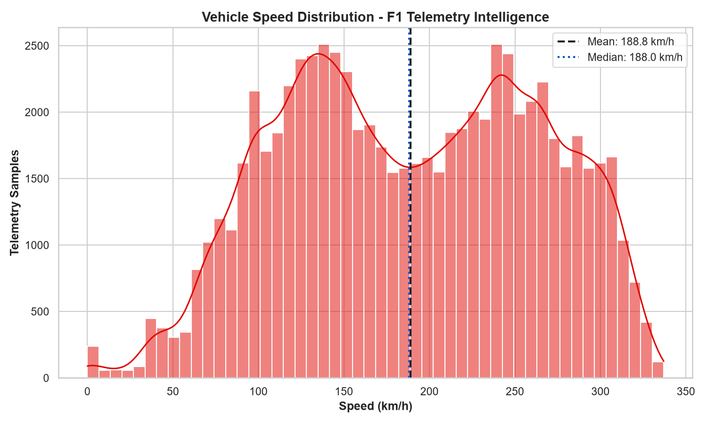
Figure 1: Vehicle Speed Distribution
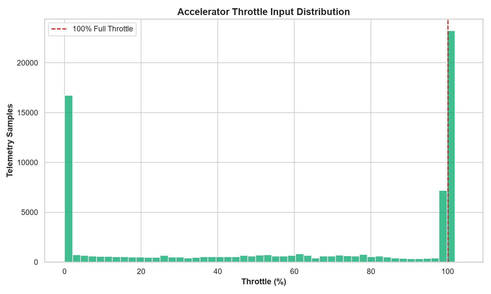
Figure 2: Throttle Input Distribution
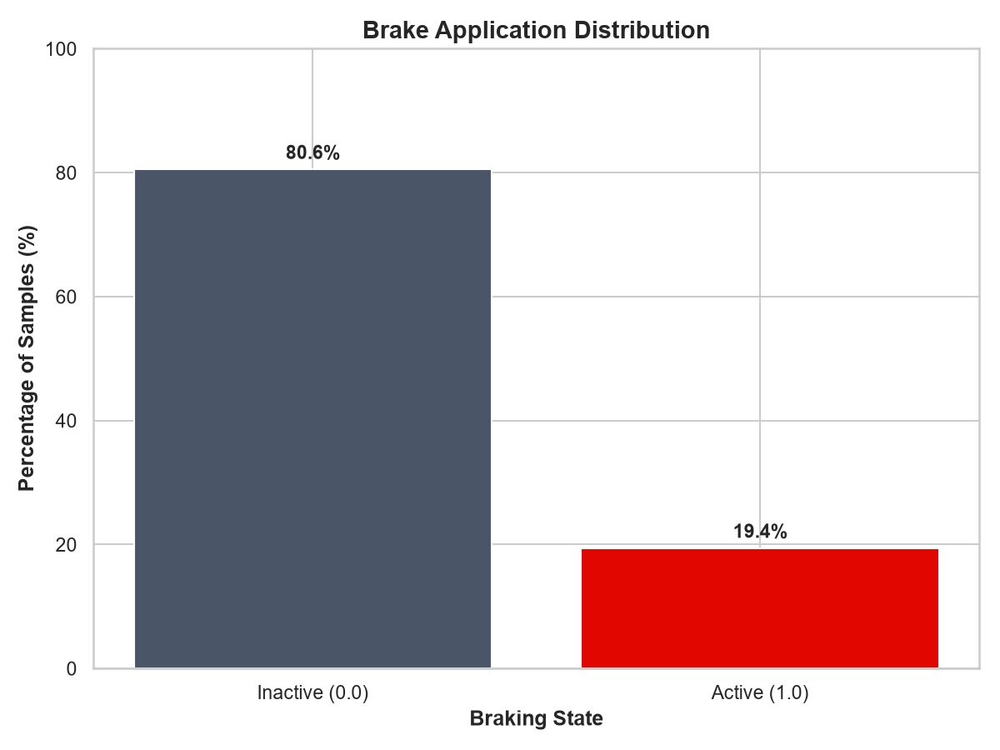
Figure 3: Brake Application Distribution
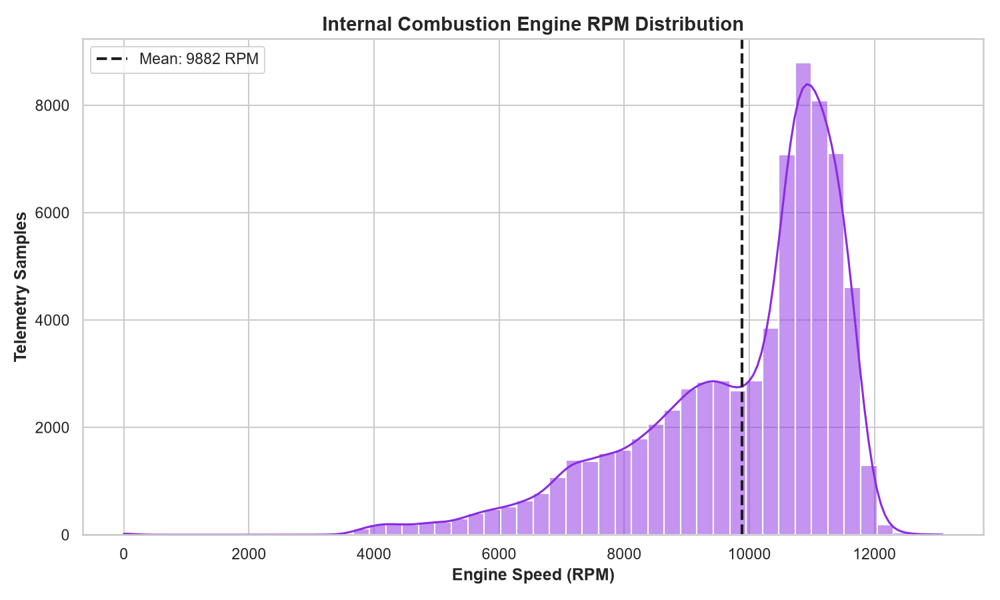
Figure 4: Engine RPM Distribution
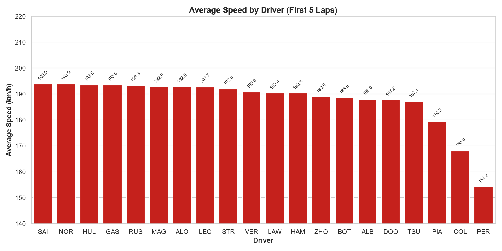
Figure 5: Average Speed by Driver
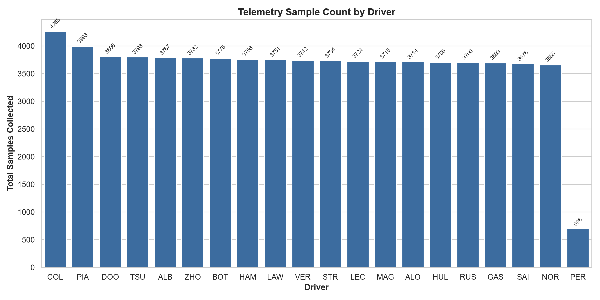
Figure 6: Telemetry Samples by Driver
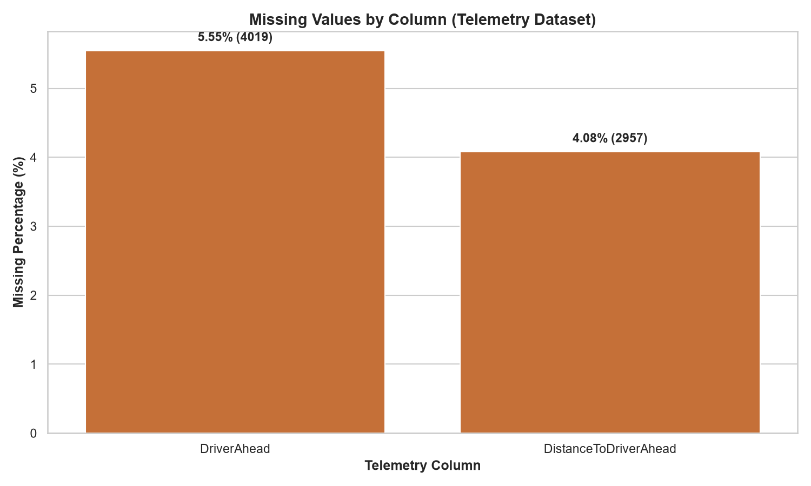
Figure 7: Missing Values by Column
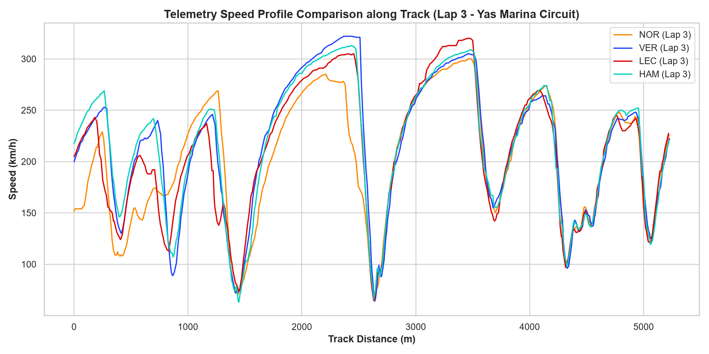
Figure 8: Speed Profile along Track (Lap 3 Comparison)
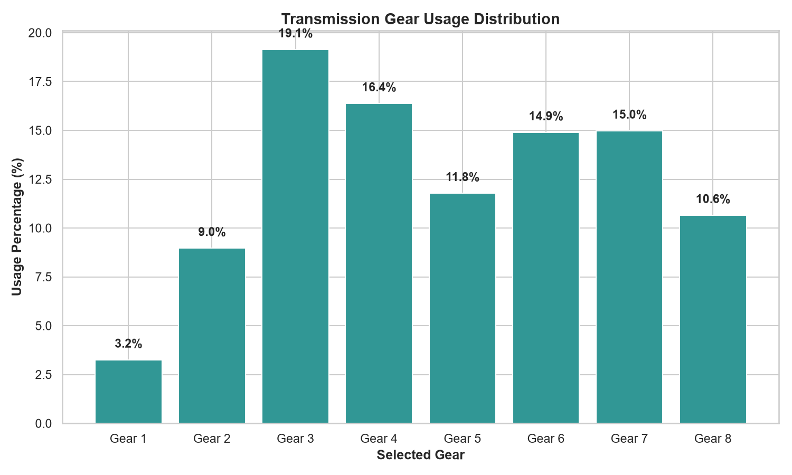
Figure 9: Transmission Gear Distribution
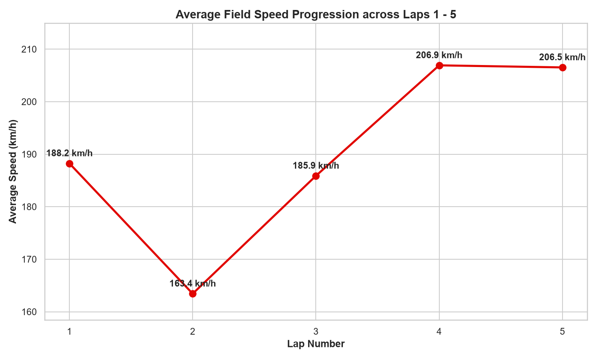
Figure 10: Field Average Speed Progression
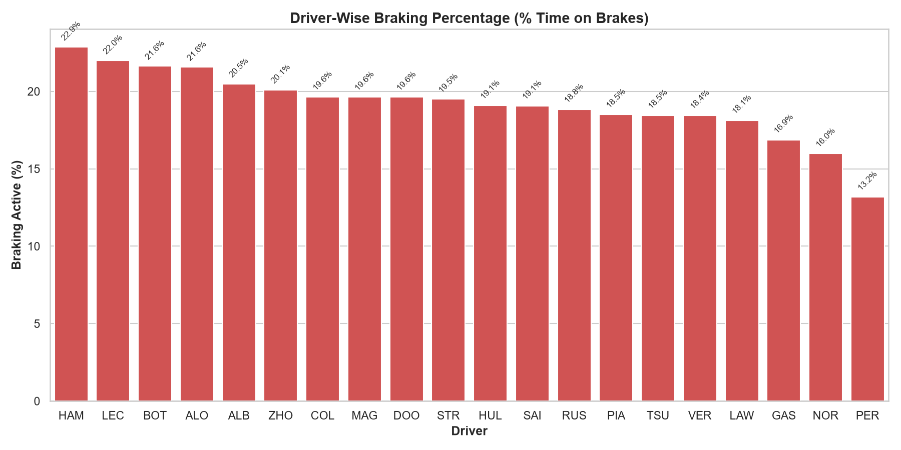
Figure 11: Braking Percentage by Driver
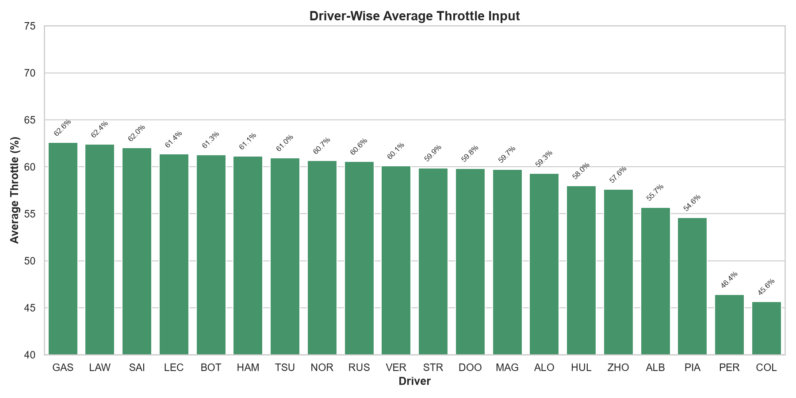
Figure 12: Average Throttle Input by Driver
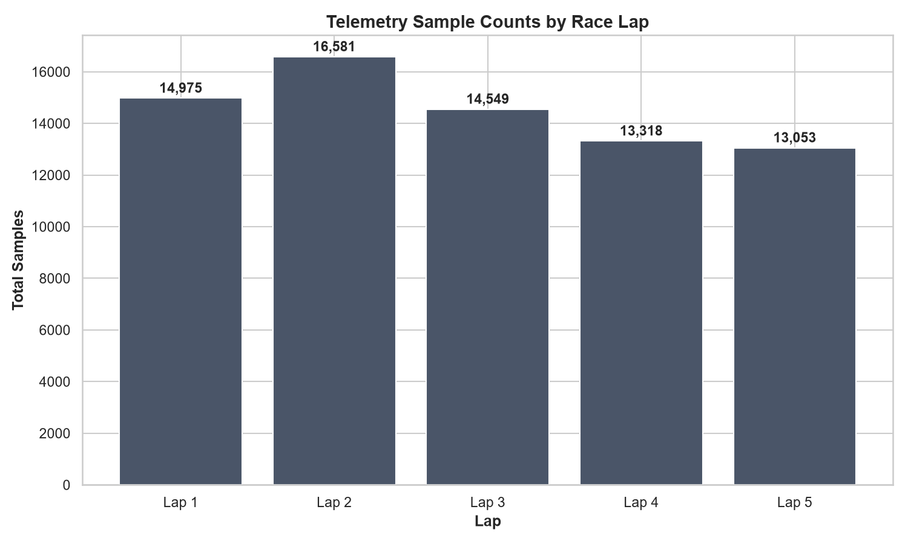
Figure 13: Sample Counts by Race Lap
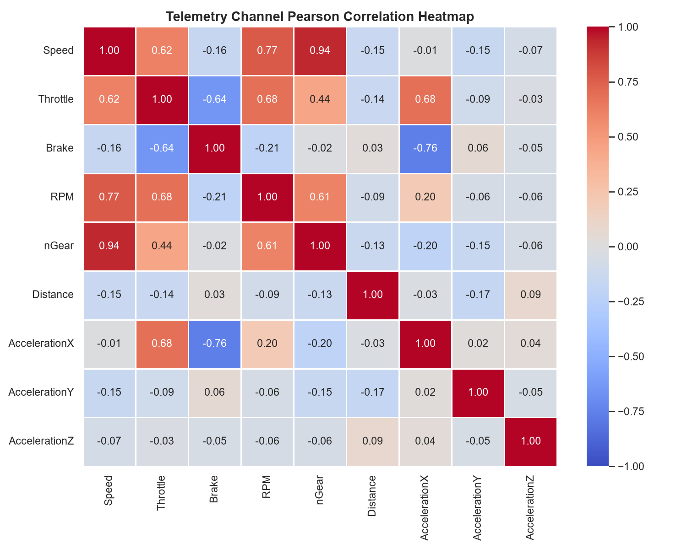
Figure 14: Telemetry Channel Correlation Heatmap
DistanceToDriverAhead nulls for race leaders (e.g. NOR); generate an explicit indicator feature IsLeadingRace = True/False rather than zero-filling.IsCompleteLap = False and separate out-of-competition samples from flying lap training datasets.